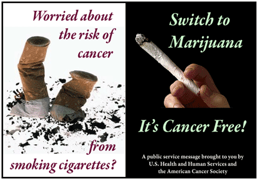

Tobacco v/s Marijuana
Here is a list of interesting facts about marijuana smoking
and tobacco smoking:
(*THC=Tetra-Hydro-Cannabinol)
o Marijuana smokers generally don�t chain smoke,
and so they smoke less. (Marijuana is not physically
addictive like tobacco.) The more potent marijuana
is, the less a smoker will use at a time.
o Tobacco contains nicotine, and marijuana doesn�t.
Nicotine may harden the arteries and may be
responsible for much of the heart disease caused by
tobacco. New research has found that it may also
cause a lot of the cancer in tobacco smokers and
people who live or work where tobacco is smoked.
This is because it breaks down into a cancer causing
chemical called `N Nitrosamine� when it is burned
(and maybe even while it is inside the body as well.)
o Marijuana contains THC. THC is a bronchial dilator,
which means it works like a cough drop and opens up
your lungs, which aids clearance of smoke and dirt.
Nicotine does just the opposite; it makes your lungs
bunch up and makes it harder to cough anything up.
o There are benefits from marijuana (besides bronchial
dilation) that you don�t get from tobacco. Mainly,
marijuana makes you relax, which improves your health
and well-being.
o Scientists do not really know what it is that causes
malignant lung cancer in tobacco. Many think it may
be a substance known as Lead 210. Of course, there
are many other theories as to what does cause cancer,
but if this is true, it is easy to see why no case of lung
cancer resulting from marijuana use alone has
ever been documented, because tobacco contains
much more of this substance than marijuana.
o Marijuana laws make it harder to use marijuana
without damaging your body. Water-pipes are illegal
in many states. Filtered cigarettes, vaporizers, and
inhalers have to be mass produced, which is hard to
arrange `underground.People dont eat marijuana
often because you need more to get as high that way,
and it isn�t cheap or easy to get (which is the
reason why some people will stoop to smoking leaves.)
This may sound funny to you � but the more legal
marijuana gets, the safer it is.
